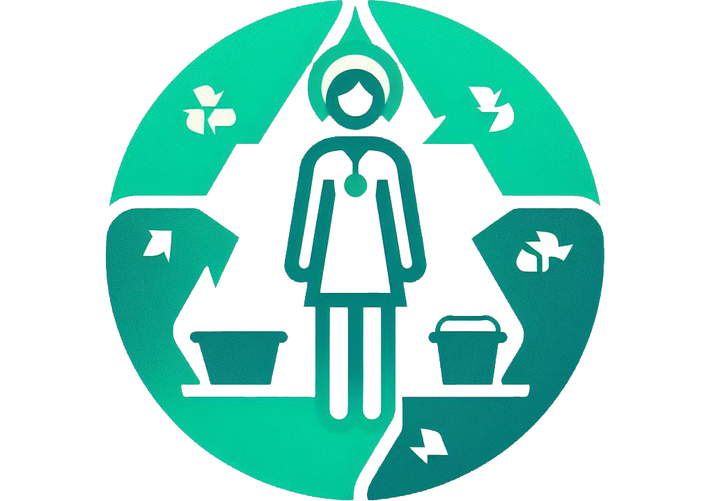

Classificação e Simbologia dos Resíduos de Serviços de Saúde (RSS)
A classificação dos Resíduos de Serviços de Saúde pela Anvisa é crucial para garantir um manejo seguro, protegendo a saúde pública e o meio ambiente, categorizando os resíduos conforme seu risco para facilitar identificação e tratamento adequado.
